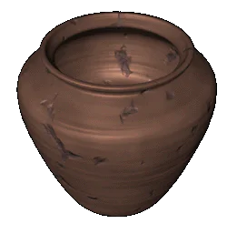

|
Гончарное дело |
|
| Продукцией
древнерусских гончаров была посуда, детские
игрушки, кирпичи и облицовочные плитки,
расписные яйца и писанки. Технологический процесс производства керамики состоял из четырех последовательных операций: подготовки специальной глиняной массы, ее формовки на специальном гончарном круге, обработки поверхности изделия и обжига. Для обжига гончары использовали горны, которые были двухъярусными с прямым пламенем и горизонтальными с пламенем обратным. По форме горны были грушевидными и круглыми. |
|
Текст и
иллюстрации (c) 1997 Snowball Interactive Entertainment, Inc. |